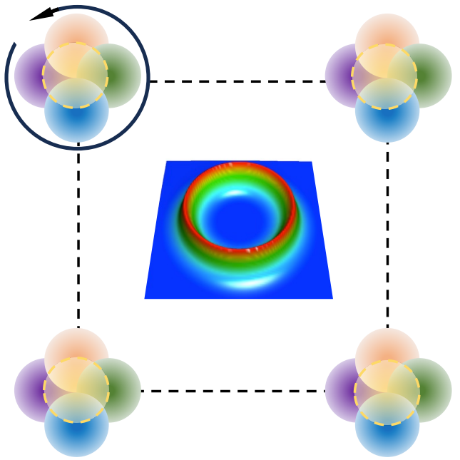
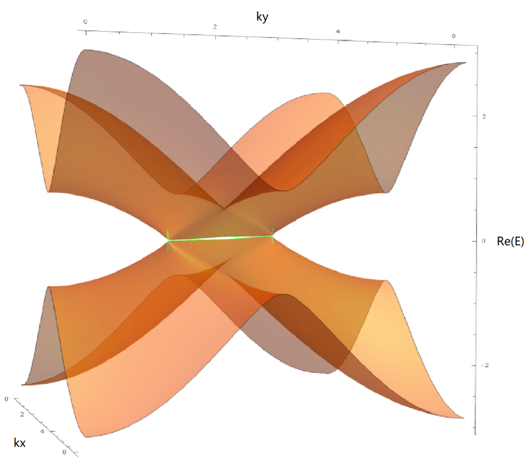

|
Kaifa Luo I am currently a Ph.D. candidate in Physics at UT Austin, where I am advised by Feliciano Giustino. I earned a M.S. in Computational Science, Engineering and Mathematics from Oden Institute in 2024. Prior to that, I graduated from Wuhan University in China, and worked at HKUST under supervision of Xi Dai. |

|
Research
I am interested in condensed matter physics, first-principles methodologies, topological states of matter, and machine learning.
Most of my research is about inferring quantum materials (structures, responses, dynamics, etc) from quantum-mechanical principles, models, and simulations,
in order to explore or design their properties and functionalities. |

|
Extreme-Band-Gap Semiconductors with Shallow Dopants and Mobile Carriers Sieun Chae, Nocona Sanders, Kelsey A. Mengle, Amanda Wang, Xiao Zhang, Jon Lafuente Bartolome, Kaifa Luo, Yen-Chun Huang, Feliciano Giustino, John T. Heron, Emmanouil Kioupakis arXiv:2506.07284, 2025 TBD. |

|
Symmetry-protected topological polarons Kaifa Luo, Jon Lafuente-Bartolome, Feliciano Giustino submitted, 2025 Combining group-theoretic analysis and state-of-the-art first-principles calculations, we classified and proposed polarons with integer topological charges in oxides and nitrides. |
|  |
Incommensurate transverse Peierls transition and chiral charge-density wave FZ Yang, KF Luo, Weizhe Zhang, Xiaoyu Guo, WR Meier, H Ni, HX Li, P Mercado Lozano, G Fabbris, AH Said, C Nelson, TT Zhang, AF May, MA McGuire, R Juneja, L Lindsay, HN Lee, J-M Zuo, MF Chi, X Dai, Liuyan Zhao, H Miao arXiv:2410.10539, 2024 TBD. |
|
Understanding chiral charge-density wave by frozen chiral phonon Shuai Zhang, Kaifa Luo, Tiantian Zhang npj Computational Materials 10 (1), 264, 2024 By tracing electron-phonon interactions in a chiral charge-density wave, we sugguested symmetry-selective engineering to control chirality in low-dimensional quantum materials. |
|

|
Transverse Peierls transition Kaifa Luo, Xi Dai Physical Review X 13 (1), 011027, 2023 By condensating transverse phonons via selection rules of angular momentum, we proposed novel density-wave states in topological semimetals. |
|
Topological phases in pyrochlore thallium niobate Tl2Nb2O6+x Wei Zhang, Kaifa Luo, Zhendong Chen, Ziming Zhu, Rui Yu, Chen Fang, Hongming Weng npj Computational Materials 5 (1), 1, 2019 TBD. |
|
|  |
Nodal manifolds bounded by exceptional points on non-Hermitian honeycomb lattices Kaifa Luo, Jiajin Feng, YX Zhao, Rui Yu arXiv 1810.09231, 2018 Non-Hermiticity of Hamiltonian brings complex behaviors to spectrum and dynamics. By designing a proof-of-principle electric lattice with gain and loss, we studied spectra evolution of a non-Hermitian topological semimetal. |

|
Topological nodal states in circuit lattice Kaifa Luo, Rui Yu, Hongming Weng Research, 2018 Topological band theory can be applied to any periodically coupled harmonic oscillators. Guided by this idea, we designed topological nodal structures in a LC circuit lattice. |
|
Feel free to steal this website's source code, which is originated from Leonid Keselman's Jekyll fork of this page. |